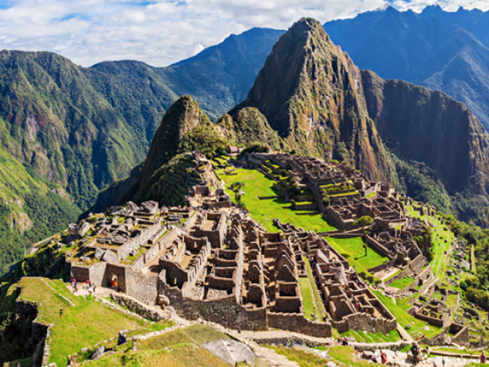

World Wonders

Chichen Itza
The Maya name "Chichen Itza" means "At the mouth of the well of the Itza." This derives from chi', meaning
"mouth" or "edge", and chʼen or chʼeʼen, meaning "well". Itzá is the name of an ethnic-lineage group that
gained political and economic dominance of the northern peninsula

Colosseum
Originally, the building's Latin name was simply the Latin: amphitheatrum, lit. 'amphitheatre'.[9] Though the
modern name Flavian Amphitheatre (Latin: amphitheatrum Flavium) is often used, there is no evidence it was
used in Classical Antiquity.

Machu Picchu
In the Quechua language, machu means "old" or "old person", while pikchu means either "portion of coca being
crunched" or "pyramid; pointed, multi-sided solid; cone".[17] Thus the name of the site is sometimes
interpreted as "old mountain".

Taj Mahal
Abdul Hamid Lahauri, in his book from 1636 Padshahnama, refers to the Taj Mahal as rauza-i munawwara
(Perso-Arabic: روضه منواره, rawdah-i munawwarah), meaning the illumined or illustrious tomb.